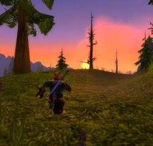

Récits Légendes de Kirin Tor Personnages Célébrités Guildes
Outils Calendrier Calendrier Illustré Mod d'interface
Informations Historiens FAQ Liens Crédits
Les légendes de Kirin Tor
==> Afficher les personnages de Delalande
Edwaard
Age : 37 ansSexe : Homme
Race : Humain
Faction : Alliance
Formation : Voleur
Description : Edwaard ...
Pauvre Edwaard ...
Pauvre ...
Edwaard ...
C' est mon nom ... c' est le nom que mes parents m' ont donné, parce qu' il le trouvait joli ... ou autre chose, je ne sais pas, je m' en fiche un petit peu. Moi, la seule chose qui m' interesse, c' est de survivre. Je sais, survivre, c' est pas interessant, mais j' ai pas le choix. Si je ne survie pas, et bien je vais mourrir. Donc voilà, je survivrai jusqu' a la fin de ma vie ...
Comment je suis arrivé là ?
Euh ... je ... je ...j.
Je ne saiiiiiiis ... Je nsais plas ...
JE
Edwaard vient de Hennepin ... village du Nord des prairies de Tirisfal. Son père était le magistrat de ce pauvre hameau sans interet et sa mère s' occupait de la maison et du petit Edwaard. Ils n' étaient pas bien riche pour des magistrats, mais certainement pas pauvres pour des villageois ... Et puis de toutes façons, ils étaient heureux ...
Mais voilà ... faut' il encore répéter ce que tout le monde sait déjà ? Ce qui à tellement de fois été entendu que la seule mention du nom lasse ceux qui l' entendent ?
Le Fléau ...
Voilà ... Edwaard est une des inombrables victimes du Fléau ...
Une victime, sur des milliers ...
La seule chose qui le différencie des autres, c' est que lui,
Edwaard est sans conteste, une des plus grande victime du Fléau ... c' est tout ce qu' il est aujourd' hui ...
Un Clochard.
Plus d'infos sur Edwaard >>>
Delalande
 Age : 66 ans
Age : 66 ans
Sexe : Homme
Race : Humain
Faction : Alliance
Formation : Prêtre
Description : [/left]Delalande ...
Personne ne sait où il naquit ...
Et personne ne s' en occupe d' ailleurs ...
Si il n' y' avait pas ses cheveux blancs pour nous rappeler son âge , on jurerait qu' il n' a que 30 ans .
Perrus Delalande ne parle jamais de sa vie passé ... sans doute parce qu' il l' a passée uniquement à étudier et à prier .
Mais le 5ème jour de la décade du Singe de la lune d' agilitée (4ème Ere) , il sortit enfin de l' abbaye de Northshire où il avait passé pratiquement toute sa vie .
Pourquoi ?
Peut-être que cet homme qui avait une telle soif de savoir , c' était enfin apperçut que ...
Il était devenu très vieux , et ...
... qu' il allait bientot mourrir .
Il avait gaché sa vie ...
Il n' avait rien fait de ce qu' un homme doit faire ...
Certes , les circonstances avait été particulièrement fâcheuse pour lui , et c' était sans dout ça qu' il l' avait conduit à sa vie d' hermitte .
Mais ... maintenant , c' était fini ...
Ecroulé , Delalande regarda tant bien que mal au travers du vitrail de l' abbaye , les jeunes novices qui s' entraînaient sur quelques loups errants ...
Ils étaient jeunes , eux , ils faisaient leurs premières rencontres , leurs premières quêtes ...
Delalande n' avait jamais connu ça ...il n' a aucun ami ... ou presque ...
Alors qu' il sentait le désespoir s' emparer de lui , il eu un mouvement de recul ...
Dans le vitrail , il se voyait , vieux ... mais avec une lueur de bienveillance comme toujours ...
Et là , il comprit ce qu' il lui restait à faire ...
Avoir gaché sa vie pour des raisons non-valables et l' avoir passée à étudier le bien et le mal , la sagesse et la folie , le courage et la peur , la lumière et l' ombre , le ciel et la terre , l' alliance et la horde , le passé et l' avenir , la prière et la philosophie ... et finir sa vie comme cela ! Un vieillard dépressif ? Perdu sous des tonnes de grimoires ?? Avec pour seule pensée qu' un squellette avec une faux ???
C' était pour finir comme cela , que Delalande avait étudié la totalité de la bibliothèque de l' abbaye de Northshire , les trois quarts de celles de Stormwind et la moitié de celle d' Ironforge ????
NON !
Il n' en était pas question ! Certes , Delalande savait qu' il allait bientôt mourrir , mais il n' allait pas mourrir en pleurant , à genoux et avec le regret éternel !
Il allait mourrir en ayant fait plus de bien autour de lui que n' importe quel héros d' Azeroth !
Oui , il sauvrait les innocents !
Il deviendrait avocat pour protéger les faibles de la mauvaise justices de certains juges !
Il surtout ... il guerirait les maux de l' esprit ... domaine dans lequel Delalande à toujours excéllé ...
Delalande est connu pour avoir guérit plusieurs citoyens de l' Alliance fous à lier !
Voilà ! Désormais ... la route de Delalande était toute traçée ...
Il s' assit sur un banc de chapelle et pour la première fois , entendit le chant des oiseaux venant de l' éxtérieur ...
Alors Delalande fut animé d' une puissance gigantesque qui lui donna une confiance innébranlable en la lumière et surtout ... en lui ...
Et ... pour la première fois depuis ... oh ! bien longtemps , Delalande sortit de l' abbaye de Northshire dans la forêt d' Elwynn ...
Depuis cet instant , Delalande recherche inlassablement des fous à guerir , des désespérés à encourager , des tristesses à éradiquer et ...
... de nouvelles idées à répandre ...
La première chose qu' il fit , fut de demander à un guerrier qui passait par là , l' évenement qui , selon lui , avait le plus d' importance et s' était déroulé avant ce jour ...
Le guerrier lui répondit , sans hésitation ...
" La prise du pouvoir par Bénédictus ... "
Plus d'infos sur Delalande >>>
Lire les 3 récits de Delalande >>>
Haalbarad
 Age : 26 ans
Age : 26 ans
Sexe : Homme
Race : Humain
Faction : Alliance
Formation : Paladin
Description : (( A refaire, et oui ! Mon Background evolue en même temps que mon talent de rôle-player. Si j' ai le temps, je le referait.^^ ))
Plus d'infos sur Haalbarad >>>
Lire le récit de Haalbarad >>>
Rumwald
Age : Adulte depuis un bon bout de temps !Sexe : Homme
Race : Nain
Faction : Alliance
Formation : Guerrier
Description : Le nain finit sa choppe de bière et s' essuit la barbe d' un revers de manche. Puis il soupire de soulagement et commence son histoire.
" Aaaah ... Merci beaucoup ! Ca me rafraichit la mémoire on dirait ! "
Il vous regarde avec des yeux pétillant.
" D' accoooord ! J' vais vous dire qui ch' suis et ce que j' fout là ...
Bon.
J' m' appelle Rumwald ! Rumwald Mac Greyland ! Ca ne vous dit rien ?
...
Et bah c' est normal ! Depuis la dernière guerre , notre famille est sans le sou ...
C' est la faute à mon père ! Et au père de mon père ! Et à son père à lui ... bref ! C' est la faut à tous nos ancètres si ont est fauchés aujourd' hui ...
Mais n' empêche , on est des nobles ! Et si Magni Bronzebeard avait un tant soit peu de respect pour les ancètres , cela ferait longtemps qu' il nous aurais récompensé comme notre famille le mérite !
Au lieu de ça ... pfeuh ! Il fait mine d' ignorer notre existence ! Comme si ... "
La courte ivresse provoqué par la bière viens de passer et le nain devient plus sombre et plus calme ...
" Bah ... en fait , j' m' en moque pas mal , moi , de notre honneur ... Enfin ... NON ! Bien sur , mais ...
J' ai du mal ...
J' ai du mal à être digne de ma famille ...
Quand je pense qu' il y' a même pas un siècle , notre famille était considérée comme la plus grande maison de guerriers chez les nains !
Quand ... sur le champ de bataille enneigé ... les nains voyait les étendards ornés du blason familial , du blason des Mac Greyland ! Et ben les soldats s' en fichait pas mal de mourrir ... du moment qu' ils savaient qu' un Mac Greyland se battait dans les rangs ... si ce n' était la victoire , c' était l' honneur assuré !
...
Je suis l' ainé des trois frères Mac Greyland ... mon père à toujours voulu que je sois son héritier ... il ne m' as apprit que le combat , la guerre , le respect des superieurs , l' endurance , aucune stratégie ... , la force ... et rien que ça ...
La seule chose " intellectuelle "qu' il m' ai apris , c' est la gestion des trèsors ...
Mais c' était à des fins beaucoup moins louables que celles d' être comptable ...
Bref ... je n' ai jamais été assez bon pour mon père ... si bien que dès que j' eu atteint ma majorité , je décidais de partir de la maison (mon père avait dû vendre le manoir familial aux créanciers d' Ironforge) et de forger moi-même ma propre réputation ... de toutes façons , celle de notre famille est presque complètement oubliée ...
Mais mon père ne voulut pas me lacher moi et mes frères ...
Ils nous ordonna quoi que l' on fasse , de faire resplendir les armoiries familiales afin de sauver l' honneur ...
...où alors de changer de nom ...
Alors chuis parti , et j' fais de mon mieux pour être à la hauteur d' un nom dont personne (ou presque) ne se souvient ...
Un jour , j' ai rencontré un prêtre humain qui m' enseigna la philosophie (enfin ... il essaya parce que j' ai pas tout compris). J' ai oublié son nom , mais je sais que c' est le meilleur humain que j' ai jamais rencontré !
Jusqu' au jour où ... quel sale type en réalité ... qu' on ne me parle plus JAMAIS de philosphie !
Puis , j' ai fait la connaissance de Kusato. Un nain voleur qui avait une idée bien étrange ...
Il voulait monter un tripot à Stormwind ... dans un but connue de lui seul (et de moi). Alors , depuis ce jour , nous sommes dans les papiers administratifs et les entretients d' embauche ...
Mais on y arrivera ! Et nous serons riches ! Et je rammènerais cet argent à mon père qui sera bien obligé de reconnaitre ma dignité ...
Mais ... est-ce digne ? "
Le nain boit votre choppe de bière et regarde tristement la table.
" De toutes façons , je ne sais rien faire d' autre ... "
Plus d'infos sur Rumwald >>>
Lire les 7 récits de Rumwald >>>
Cyraneau
 Age : La trentaine
Age : La trentaine
Sexe : Homme
Race : Gnome
Faction : Alliance
Formation : Démoniste
Description : Une détonation
Je relève la tête de mes feuilles de calculs, et je tente d'e deviner le genre de l' explosif qui à fait ça.
_" Mmmh... probablement un chapelet de dynamite grossières... 2 chapelets assez proche qui auraient sautés simultanéement... "
Mon frère me crie de son atelier, dans la cave :
_" Qu' est-c' tu dit ?
_C' est deux chapelets composée d' environ 6 ou 7 dynamites grossières qui viennent d' exploser selon moi !
_Que veux tu que ça me foute ?
_Ah ah ... "
Je rit dans mes moustaches.
Mon frère n' est pas brillant dans mon domaine. Il préfère l' achimie. Mais moi, en plus d' être ingénieur, je suis aussi Alchimiste ! Et non des moindres ! Je suis aussi bon que mon frère malgré le fait que je me consacre presque uniquement aux explosifs.
C' est parce que mon frère s' interesse surtout à l' Herboristerie. Je prefere dire ça quand je parle de lui.
Il fait mine d' étudier l' alchimie, mais il passe le plus clair de son temps à fumer des herbes bizarres qui le rendent tout aussi identique.
Mais j' éxagère, il bosse bien. Et il fait des choses très interessantes d' ailleurs, quand il est dans son etat que je qualifierait de "second".
Une détonation plus proche suivie d' une longue resonnance.
_Aha ! Ca, c' est du joli ! -Dis-je avec une expression de mélomane.
_Rah la la la la la ! Mais on peut plus se concentrer avec tout ce bordel ! -répond mon frère qui remonte de son atelier en fumant un étrange cigare. Il à les yeux dans le vague et semble très calme, malgré ce qu' il vient de dire. Il a les mains dans les poches et je me demande si il les a sorties pour travailler depuis ce matin.
_Ce "bordel", comme tu dit, est ma source d' inspiration frerot. -lui dis-je en souriant.
Il rigole en secouant la tête comme pour dire : Quel barjo !
Il ne s' est pas regardé !
Il retire les mains de ses poches et prend son cigare entre les doigts. Il se dirige vers le fenètre à coté de la porte d' entrée blindée à fermeture verticale-automatique.
Il regarde dehors, dans le couloir 73 de la zone 14 du 5ème sous-sol.
C' est là que nous habitons. Mon frère et moi, depuis plusieurs décénies.
Je le regarde, et me rapelle quand nous étions enfant, a Gnomerivage. Un port gnome assez petit où les inventions de notre peuple étaient embarquées par bateau pour on-ne-savaient quel commanditaire.
On ne savait même pas qu' il y' avait des gens au-delà de la mer. On était des petits gnomes. Moi j' avais 8 ans et mon frère 7. Notre mère on ne l' a jamais connue. Pendant des années, on ne savait ni qu' on en avait une, ni qu' elles existaient, ces chose que les gens appelent avec amour : Mère...
Donc, quand on à entendu parler de mère, on est allez voir chef. Chef, c' était un peu notre "père". On ne savait pas que les "pères" existaient non plus...
Bref, Chef nous dit que notre mère étaient son ancienne serveuse et qu' elle était morte en nous mettant au monde.
Nous "mettre au monde" ?
On ne savait pas ce que ça voulait dire non plus.
On pensait que les gnomes était construit par des ingénieurs, comme tout ce qui existe.
Mais non, rien n' est simple. Tout doit être compliqué. Mais comme je dit toujours : " C' est normal que ce monde soit pourri ! Il à pas été inventé par les gnomes ! "
Les gens aiment pas quand je dit ça. Je vois pas pourquoi.
Bref, une mère morte en couche par la faute d' un père marin.
On a même pas voulu se venger de notre père, ni le retrouver.
A cette époque, on s' en foutait de tout. C' était déjà assez dure de survivre comme ça.
On travaillaient dans les docks. On portait les caisses d' explosifs pas trop lourde. Avec interdiction formelle d' y toucher.
Mais comme je l' ai dit, à cette époque, on s' en foutait de tout, y compris de ce qu' il y' avait des les caisses qu' on transportait.
Maios un jour, un gnome que les autres appelait "Pirate" nous demanda nos noms. Je disais que je m' appelait Cyraneau et que mon frère s' appelait*
De petites détonations de fusils retentissent.
_"Ah. Ils attaquent dans le couloir 74 ou 72 ! C' est pas loin d' ici que ça pète ! -dis-je en me sortant de mes souvenirs sans noblesse ni beautée quelconque.
Il y' a un silence. Mon frère, tojours calme, crache une bouffée de fumée verdâtre et dit :
_Ouais.
Mouais. C' est pas aujourd' hui qu' il va atteindre des sommets d' efficacité. Mais rien n' est perdu, il ecrase son cigare dans le cendrier anti-incendie de ma confection.
Il remet ses mains dans ses poches mais ne se retourne pas. Au bout d' un moment, il dit, couvrant les coups de feu qui ne semblent pas s' arrêter.
_Tu crois que c' est des troggs ? Ou c' est encore une emeute ?
Je rit.
_ AH ah ah ah ah ! Si les troggs étaient arrivée jusqu' ici, y' aurait plus que des petits coups de feu mon cher *Grosse détonantion, les coups de feu s' arrêtent.*...agit juste d' un stock qui vient de péter, comme d' habitude.
_Ouais.
Je range mes feuilles. Il y' a peut-être des dégats importants à observer dans les couloirs voisins. C' est toujours très interessant d' observer les dégats dus à des explosifs.
_Bon, on va voir ce qui a explosé ? demandé-je en souriant.
_Oooooki mon gars ! répond mon frère en se tapant le genou avec enthousiasme.
Je met mes feuilles dans mon armoire automatique et ferme en activant le code secret. A cause de l' invasion des troggs, il y' a des pilleurs dans Gnomeregan. Mais je pense qu' ils n' oseraient jamais s' attaquer à la maison des de Acrylate !
On sort dehors et la porte blindée à fermeture verticale-automaitque se referme derriere nous.
On descend le perron et on arrive dans le couloir 73 éclairé par les lampes Gnomhallogènes. Moi et mon frère, on marche sur le bétron, matière solide utilisée pour bétronner les milliers de couloir de Gnomeregan.
Mon frère à toujours les mains dans les poches.
Monsieur Balty, le boucher est dohrs, le fusil à la main. Lui, par contre, c' est fait piller son magasin par des pilleurs. Mais le pire, c' est que les autoiritées gnomes ont réquisitionnée son stock qu' il gardait bien à l' abris dans sa chambre froide-blindée. Pauvre Monsieur Balty...
Il me fait un signe de main en guise de bonjour.
Cet homme est courageux. Il est ruiné. Les autoritées n' ont rien pu faire pour empêcher le pillage de sa boucherie, mais elles n' ont pas oublié de réquisitionner le peu de nouriture qu' il lui restait !
Raah... Quand je vois cet homme, qui tente de garder la fâce alors que tout fout le camp, ici, à Gnomeragan, et que je vois comment les autoritées gèrent la crise, j' ai envir de tout faire sauter.
Le Grand-Artisant Mekkatorke est un imbécile ! Un incapable ! Ce n' est qu' un gros roublard quarismatique à la grande gueule qui ne sait rien à l' administration !
Ses perquisitions sont tout bonnement intolèrable !
Partout, il est affiché que la population gnome doit faire des efforts pour la guerre contre les troggs. Qu' il faut fournir armes, main d' oeuvre, materiel, nourriture et tout ce qui nous tient à coeur, au profit de l' armée !
Je fulmine de rage. Et je m' apperçoit que cette rage est affichée sur le visge de tout les gens du couloir 73 que je croise : Monsieur Bibletruide, Igard Valtrolo, Madame Fizzlespeed, la famille Blackpowder des sacrès adolescents que les Blackpowder ! Pas du genreà se laisse faire ! Les pilleurs les évitent, eux aussi. Les Blackpowder sont des braves gars. Et leur père un saint homme !
_" Salut Raspoutine Blackpowder ! Et salut à tes 7 fils !
Il mez rends mon salut et me tape sur l' épaule, le visage dur mais souriant :
_" Salut à toi Cyraneau ! Les temps sont durs n' est-ce pas ?
Mon frère salue tout les enfants Blackpowder d' une façon à la mode chez les jeunes de cet âge-là. Ils rigolent ensemble.
Je répond à Raspoutine.
_ Oui, les temps sont durs, et les réquisitions n' ont toujours pas été abolies... c' est inimaginable. Pour qui se prend Mekkatorke ?
Raspoutine fronce les sourcils. C' est un gnome immense, aussi grand qu' un nain. Sa présence peut-être aussi rassurante qu' effrayante.
_" Arrh ! Je suis en rage ! Je dispose de tout un stock de fusils chez moi. Les autoritées les savent et ne tarderont pas à faire une descente chez moi pour "réquisitionner" mon stock ! Je suis le prochain sur la liste Cyraneau, je le sens...
_Moi aussi j' ai la rage Raspoutine. Moi aussi je possède un stock enorme d' explosifs chez moi...
_Mais tu ne comprends pas Cyraneau ! Ses fusil font partis de la famille ! Ils sont ornés aux initiales de chacuns de mes fils ! Ils en ont reçus chacuns un à leur 15ème annniversaire, comme le veut le tradition familiale ! Qu' est-ce que je vais faire si les autoritées veulent me les prendre ! Je... je ne peut pas les laisser faire !
_Non, Raspoutine, mais ne t' inquiète pas. Je pense que si tu leur explique tout ça, ils comprendront et ne prendront que ton surplus de munitions par exemple...
_Franchement Cyraneau... tu y croit vraiment ?
Non, je n' y croit pas du tout. Chez les Brizzlesweet, ils ont tout prit, même le fusil familial du vieux. Et quand le fils à voulu empêcher cela, ils l' ont foutu en prison. Heureusement qu' ils l' ont relaché, parce que sinon, y' aurait encore eu une emeute.
_Cyraneau... tu y croit encore, toi ? A Gnomeregan ?
Raspoutine me regarde d' un regard que je n' avais encore jamais vu. Celui de l' homme qui doute, qui à peur, qui sent la fin arriver et qui n' y peut rien. A ce moment là, je lui dit:
_Raspoutine. Gnomeregan est foutue tant que Mekkatorke est au pouvoir. Il est manipulé par ses conseillers et il est complètement dépassé par la crise Trogg. Si Le Grand-Artisan saute, les conseillers sauteznt aussi.
_Attends, Cyraneau, qu' est-ce que tu me raconte là ?
Entretemps, d' autres personnes du couloir 73 se sont approchée de nous pour écouter. Nottement madame Doubtbringer à qui je fait la bise avant de continuer.
_Je veux dire par là que les conseillers ont peur de leur peau. Ils vont faire un coup foireux, horrible, je le sens...
Un gnome arrive, Trad Tanglejouayne, et lance:
_Comment ça ? Quel coup foireux ?
De plus en plus de personnes arrivent.
Je leur explique mes craintes.
_Messieurs et mesdames du couloir 73... Je craint fort que la crise echappe non seulement à ce pantin de Mekkatorke, mais aussi à ses conseillers eux-mêmes !
Ca, on le sait que trop bien ! -déclare une gnome aux cheveux roses.
_Je craint que toutes les réquisitions d' armes, de nouriture, d' explosifs, de médicaments, de matières premières, et de tout ce que nous possèdons, ne servent... non pas à attaquer les troggs, Mais...
Tous, ils m' écoutent, comme au discours des fêtes. Mais cette fois-ci pas de chapeaux pointus ni de serpentins dans l' air. Et certainement pas non plus de visages réjouis et enjoués, non. Ce sont les visages de la peur, de l' indignation et de la colère qui me regardent.
Et qui m' écoutent.
_Mais plutot pour organiser une défense sacrificielle !
Peu d' entre ex ont compris. J' illustre mon idée.
_Les quartiers riches font pression sur les conseillers ! Ils les corrompent ! Vous le savez tous après l' affaire Tourneboulon !
_Ouais ! -déclare une grande partie de l' assistance.
_Et bien je soupçonne les conseillers de prévoir une défense sacrificielle ! C' est à dire de réquisitionner toutes nos armes, touts nos biens pour se lancer dans une attaque sucidaire à l' encontre des troggd, et ceci dans le but de permettre aux riches de s' enfuir !
Mais nous, nous... Les habitants des sous-sols infèrieurs. Les quartiers pauvres... nous sommes hors des portes de sécurité ! Et vous savez ce que cela signifie ?
Toute l' assistance est choquée, la colère monte sur tout les visages. Comment puis-je être capable de susciter autant de haine ? Comment suis-je capable de faire éclater la verité au grand jour ? Pendant un instant, j' hésite à m' enfuir... mais je reste. Je n' abandonnerais pas ses gens !
_Cela signifie que les sacrifiés seront nous ! Oui, nous ! Les pauvres ! Les habitants des sous-sols infèrieurs ! Nous !
Et quand l' amrée de Mezkkatorke... ou pluto devrais je dire : Sa Milice dictatoriale ! nous aura dépouillé de tout nos moyens de survie, de nos vivres. De touts nos moyens de resistance, de nos armes et de nos explosifs. De tout nos moyens !
Que pourrons nous faire, quand les troggs parveindront jusqu' à nous ? Hein ? Désarmés ! Affamés ! Que feront nous ?
Car c' est précisemment ce qui va arriver... l' armée de Mekkatroke ne comptent pas user ses troupes à empêcher les troggs d' atteindre les niveaux inférieurs... non, Il resteront bien au-dessus à couvrir la fuite des riches !
Des cris de guerre résonnent dans le couloir 73. Qu' ais-je fait ? Aurais-je du me taire ? J' ai agit sous la colère et j' ai dit mes idées alors que je n' avais aucunes preuves ! Cependant, ils m' ont cru. Et ...
Ils m' acclament ?
Mais ! Ils font trop de bruit ! Les autoritées vont croire à une emeute et vont rappliquer ici ! Et en voyant une foule de gnome en colère, c' est précissment ce qu' il va se passer...
Je dois agir.
_SILENCE ! Mes frères, silence ! Nous savons le complot des conseillers. Si ils savent que nous sommes au courant, ils vont nous faire assassiner ou je-ne-sais quoi de pire ! Nous devons tous rtentrer chez nous dans l' ordre. Afin qu' ils ne se doutent de rien... mais si jamais l' on vientréquisitonner chez vous, ne vous laissez pas faire.
Et ne vous inquiètez pas... unis, ils ne peuvent rien contre nous. Ni les troggs, ni les autoritées.
Tous partent, l' allure determinée et fière. Ils partent rpéendre la nouvelle dans les autres couloirs, les autres sous-sols même, peut-être...
Je suis allé trop loin.
Mais il est trop tard pour reculer.
Je neput pas les decevoir.
Il se passera ce que j' ai dit.
Si jamais les autoritées viennent faire une réquisition au couloir 73,
Je déclencherais, la révolution...
Plus d'infos sur Cyraneau >>>
Lire les 3 récits de Cyraneau >>>
Koyaniskatsi
Age : Assez vieuxSexe : Homme
Race : Troll
Faction : Horde
Formation : Chaman
Description : Dans les plaines de Tirisfal, une présence incongrue...
L' herbe pourissante...
...foulée par un pied bestial.
Le vent de la fin balaye la plaine...
...humé par une créature qui ne devrait pas se trouver là.
Le morne disque d' un soleil mort...
...éclaire un visage au faciès monstrueux...
Un troll.
Le troll, les mains derriere le dos, dans une attitude parfaitment humaine, inspecte d' un oeil inexpressif les cadavres jonchant la plaine...
La puissance des hommes.
Le troll erre sans émotions visibles au milieu du champs de bataille abandonné...
Puis, il s' arrête. Le vent de la peste fait voleter par bourrasques sa robe de Chaman. Il attend un moment devant un des cadavres.
Il le regarde attentivement.
Il approche son visage repoussant de celui, pâle et sans vie du soldat.
Chevalier Heinrich Von Ritchcoff, décoré post-mortem par l' aube d' argent. Héros de la bataille de Noireplaine.
" Ton héroïsme restera à jamais gravée dans nos mémoires. Toi, Heinrich Von Ritchcoff, martyre de Noireplaine, terrasseur de seigneur des cryptes Ram' Abyssh' Al et Magistrat de Brill. "
L' armure du soldat est éteinte... la lumière l' a quitté entièrement... Le troll regarde sans comprendre vraiment, les multiples ornements de l' armure souillée par deux sangs.
Celui de l' homme, et celui de la créature en haut de la colline en bas de laquelle gît le soldat...
La forme monstrueuse du seigneur des Cryptes, mort. Des lances sont plantées sur sa carapace. La masse de la chose est affalée sur le sommet du petit monticule de cadavres.
La montagne du combat cache le morne soleil. Et le troll commence à la gravir avec une agilitée exceptionnelle.
Une fois arrivé en haut, le troll se retrouve fâce à fâce avec le démon terrassé. Plongeant son regard dans celui de la créature, le troll reste assis pendant des heures...
___________________________________________________
Rapport de l' équipe de secours aux éclaireurs chargés de bruler les corps de la bataille de Noireplaine.
Maréchal, nous sommes arrivés aujourd' hui à 17h sur le champ de bataille de Noireplaine.
Nous avons tout d' abord remarqué la présence des cedavres. Les eclaireurs n' avait donc pas put faire leur travail pour une raison que nous découvrîmes plus tard. Les corps des éclaireurs ont été retrouvés au pied du monticule soutenant les restes du seigneur des cryptes. Massacrés "moyennement " d' une main que mon experience qualifierait de " sauvage, mais cependant sans excés ". Je ne sais pas si vous avez comprit le facultatif, Maréchal, mais de toutes façons, vous savez le principal : Les eclaireurs sont morts. Et le travail n' a pas été fait. Ni par eux, ni par nous. Nous rentrons à Brill. Et j' aurais deux mots à vous dire sur votre façons d'organiser, qui nous à ammené, moi et mes hommes, à faire cette mission aussi dangereuse qu'i nutile.
Et cela même si vous êtes mon supérieur militaire.
Duthorian Rall, Chevalier-sergent de l' armée de Stormwind.
________________________________________________
Au loin, le troll voit un nouveau groupe d' hommes...
Peut-être viennent' ils pour retrouver leurs frères qu' il vient de tuer.
Koyanisktsi ne voulait pas être dérangé.
Maintenant, il ne le sera plus... le troll repart vers le rivage. Il n' a pas à s' occuper des nouveaux arrivants.
Il a passé le temps qu' il devait passer ici....
Il a vu ce qu' il devait voir...
Il a senti ce qu' il devait sentir...
Il a touché ce qu' il devait toucher...
Il a entendu ce qu' il devait entendre...
Il a gouté ce qu' il devait gouter...
Il a parlé avec qui il devait parler...
Il a laissé ce qu' il devait laisser et emporté ce qu' il devait emporter...
Avec la promesse qu' il reviendra...
Pour accomplir ce qu' il davait accomplir las-bas...
Plus d'infos sur Koyaniskatsi >>>